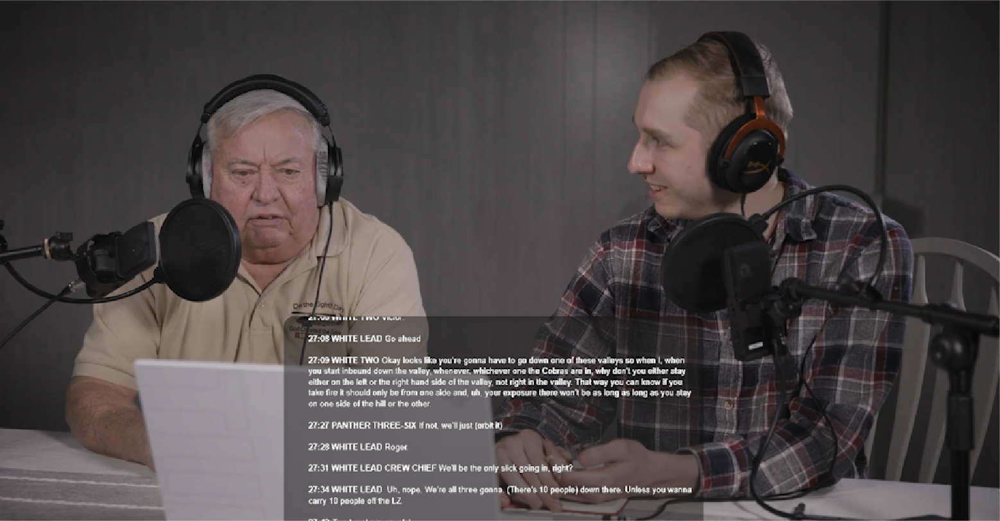
Join CW3 Woody Woodard as he breaks down moment-to-moment his experiences flying a white-knuckle mission to rescue two MACV-SOG recon teams in peril in January 1971.
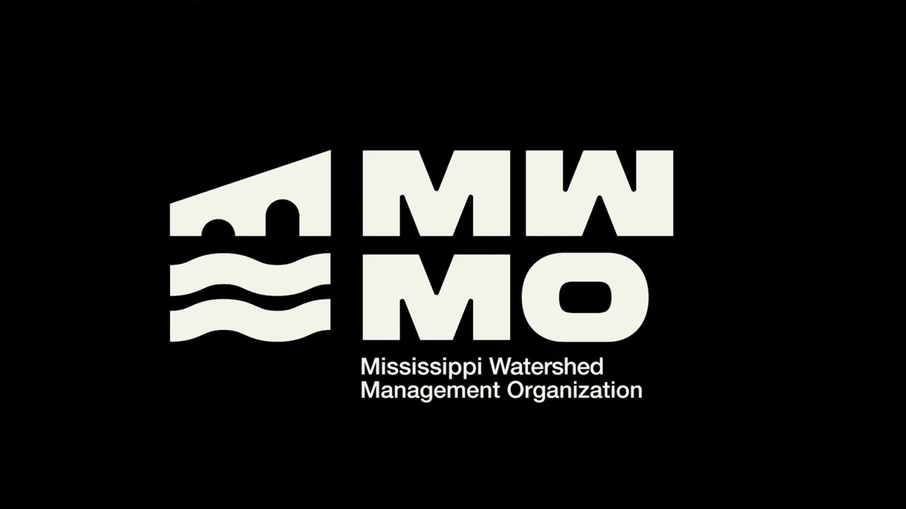
Multiple animations I made for the Mississippi Watershed Management Organization, including of their logo and lower thirds. Motion graphics are one of my favorite types of work!
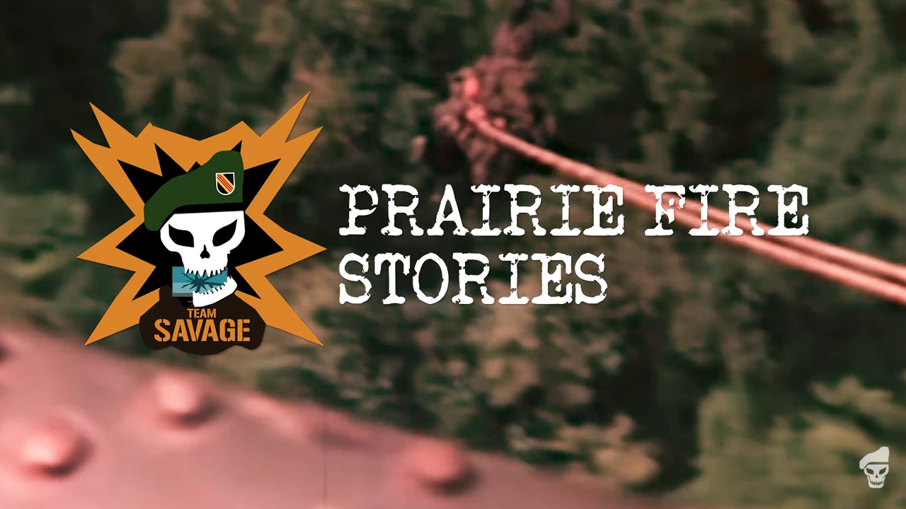
Title sequence for Vietnam War interview series - complete with motion graphics animations, music from S.O.G. Prairie Fire, and historical footage.
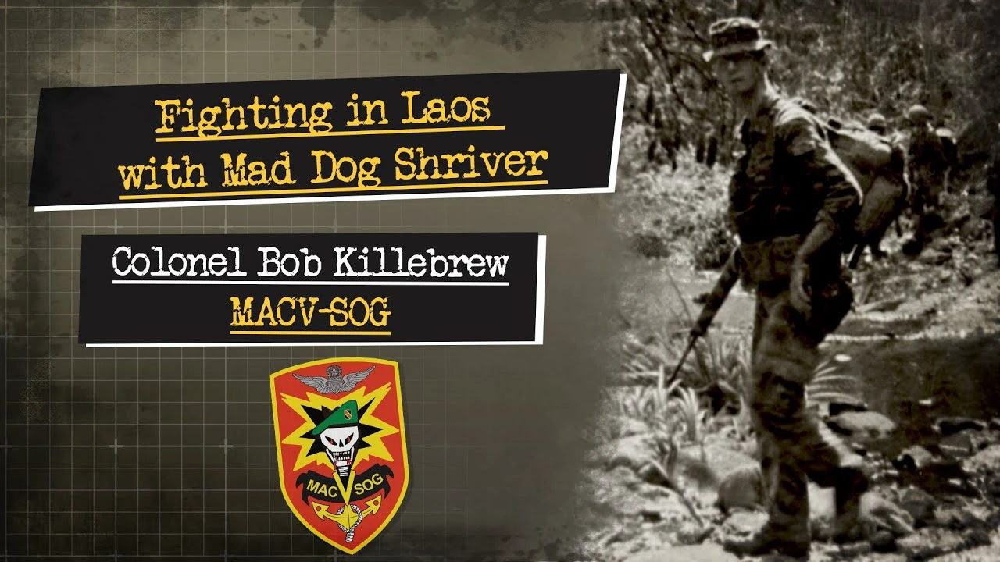
A rare firsthand account from Bob Killebrew offers an inside look at the legend of Jerry “Mad Dog” Shriver and the realities of MACV-SOG operations in Vietnam.

Written by Henry L. (Dick) Thompson, Phd., this audiobook memoir takes listeners on a journey through the true experiences of Lt. Dick Thompson as he takes on highly classified, highly dangerous missions in Laos and Vietnam. Narrated by Sam Eriksson.
Of all the projects I have worked on with Team Savage, this is one of the most meaningful I have had the opportunity to be part of. Several summers ago, I undertook the task of transcribing a chaotic and lengthy audio recording of a top secret combat mission in Laos conducted by members of MACV-SOG. I began this independently in my free time, with only limited background from articles and a podcast featuring John Plaster, who served as a Covey rider on the mission.
In this role, he operated from the back seat of a forward air controller OV-10 Bronco, helping coordinate air support for two reconnaissance teams on the ground deep in enemy territory. The mission was highly unusual. Two separate teams, miles apart, were compromised at the same time. Plaster and his pilot, Mike Cryer, alongside supporting elements flying A-1 Skyraider, UH-1 Huey helicopters from the 57th Assault Helicopter Company, and AH-1G Cobra gunships from the 361st Aerial Weapons Company, worked to hold off a large enemy force long enough to extract both teams.
Early in the engagement, David “Lurch” Mixter of Recon Team Colorado was killed when an NVA rocket struck him after he pushed teammate Lyn St. Laurent to the ground, saving his life.
A tape like this is exceedingly rare, as the nature of SOG operations prevented any photographs or recordings of this nature. Still, some crew members on board a 57th AHC helicopter let the tapes roll as the battle raged in the air and on the ground. Team Savage received our copy from Barry Lewis Subelsky, and our audio engineer Dennis Kahl cleaned up the tape. We received permission from Plaster to include the recordings in our video game, S.O.G. Prairie Fire, as a way to connect players to the history and the real men who ran these missions.
The transcription process itself was demanding. The recording captured multiple overlapping radio transmissions with little context. I spent the summer listening repeatedly, working to identify voices, terminology, and the evolving battlefield situation. I received invaluable support from my friend and MACV-SOG veteran Don Haase, a former Huey crew chief, who helped interpret difficult segments and clarify operational details.
Years later, at a SOG reunion, I spoke with Colonel Barry Pencek, who connected me with Chief Warrant Officer 3 Woody Woodard, a Cobra pilot who had flown on the mission with the 361st in January 1971. After reaching out, Woody confirmed his involvement and invited me and our film specialist Paul Hildebrandt to his home. We spent an afternoon recording an interview and reviewing the original audio together. He was exceptionally generous with his time and insight, offering a deeper understanding of the air operations that shaped the mission.
Woody sadly passed away not long after, and this video was released in his honor. This project is intended to preserve and share the experiences of the aviators and recon teams involved, and to ensure their actions and sacrifices are remembered. I edited and assembled the footage from the interview and archival audio into the final piece, which we released on the Savage Game Design YouTube channel. We later had the opportunity to meet with Lyn St. Laurent for a similar recording, which is currently in production.
The technical elements of this project included preparing files and synchronizing a scrolling text transcript with the tape audio, setting up an audio interface, microphones, headphones, and recording equipment. Paul handled the camera work. I recorded the audio of our podcast to multiple storage devices to ensure we had a backup in case of any point of failure. The podcast is primarily intended for historical enthusiasts, but is also intended to help bring Vietnam War History to players of the S.O.G. Prairie Fire game.
This project was a fitting application for the motion graphics course I took at school. The Mississippi Watershed Management Organization, which manages the watershed around much of the Twin Cities area, had recently undergone a brand refresh and needed reusable, dynamic assets for future media production.
Motion graphics are a great way to create visually appealing media while also helping the audience understand and retain information.
We identified a need for video end cards that could tie together the beginnings and endings of MWMO short and long form videos. The new MWMO logo was a strong foundation for this because it is memorable, clearly identifiable, and built from clean visual elements with minimal overlap.
We also identified a need for lower thirds to help audiences understand information presented in video form. Accessibility is especially important for government organizations, so these animations needed to be simple, clean, and easy to read. The lower thirds could define specialized terms for viewers while also identifying key personnel and their job titles.
This focus on accessibility allows video productions to have a greater reach. Since a large portion of the target audience of Twin Cities residents may not have a background in environmental science more easily understand the information presented in these videos.
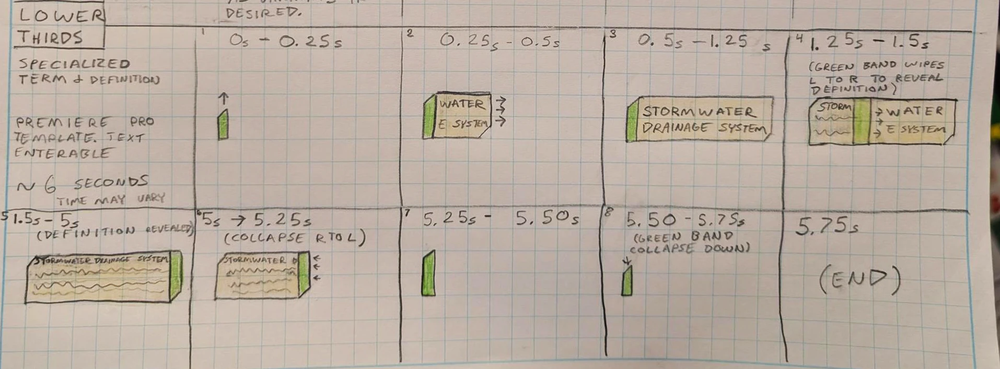
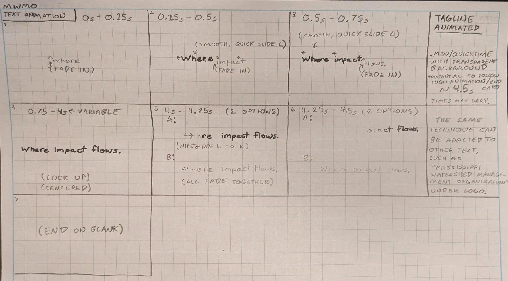
I started with a series of storyboard sketches, which eventually evolved into the final animation package. For the tagline and text animation in the end cards, I used the speed graph functionality in Adobe After Effects to create a smooth sliding effect.
The result is a smooth, professional animation package that helps unify MWMO video content under a consistent visual identity.
These animations were successfully used in several video productions made by classmates, and they are modularly set up as Premiere Pro motion graphics templates so the client can use them in future projects as well.

SOG history is a deep passion of mine, so when I was given the opportunity to help Lieutenant Colonel Dick Thompson bring his legendary book, SOG Codename Dynamite: A MACV-SOG 1-0's Personal Journal, to audiobook format, I was beyond honored. This was my first major audiobook project, and I wanted to provide the highest quality narration and performance possible for the many passionate listeners who care deeply about SOG history, especially the veterans whose stories are told in this book, including those who are no longer with us.
I came into this project with several years of SOG history research, along with firsthand experience getting to know SOG veterans at reunions each year. I had also previously worked on SOG voice acting for the S.O.G. Prairie Fire video game, which helped inform my approach to tone, authenticity, and delivery. As an avid listener of SOG audiobooks myself, I have noticed some performances, while otherwise fantastic, have understandably struggled with proper pronunciation of many of the specialized terms associated with MACV-SOG, the military, and the Vietnam War. I was fortunate to be able to leverage my military experience, SOG history prior knowledge, and other resources to help aid in authentic delivery. I put every ounce of passion I have for Vietnam War and Special Operations history into this performance.
As for the technical side, this was the most ambitious audio project I have ever taken on. It was an incredible opportunity to learn everything from setting up Reaper as a digital audio workstation for punch and roll recording, to building a proper home studio environment that reduced reverb and created a better listening experience for the audience. I utilized an audio interface and condenser microphone for this project.
I also learned a great deal about post production, including applying plugins from the iZotope series, editing out plosives, clicks, and other unwanted sounds, and maintaining consistent quality throughout the full audiobook. The final mastering was done by my good friend Dennis Kahl, also known as Lord Jarhead, who created much of the audio for the S.O.G. Prairie Fire video game and is well known in the Arma community for his JSRS sound mod.
Dennis also provided invaluable technical advice for the project. I am very grateful for his insight!
The performance itself was one of the greatest learning opportunities I have had as a voice actor. I had the opportunity to really dial in the narration so that it captured the story with authenticity and respect for the history behind it, while also bringing out Dick Thompson’s dry humor and the intensity of the combat segments.
This book covers some dark, emotionally heavy, and sometimes graphic content that exemplifies raw survival mindset of a soldier at war. The combat segments were especially intense to narrate. Dick encouraged me to help convey what these warriors experienced on the ground, and what it was like to communicate with support assets during life or death situations against overwhelming enemy forces. His writing is gripping, raw, and hard hitting. His experiences show the almost unbelievable reality SOG operators faced every day. For them, it was just another day in SOG.
Dick gave me explicit instructions to turn up the intensity and volume during SOG Prairie Fire emergencies to help convey the chaos and urgency of those moments. I did my best to bring that intensity into the performance while still honoring the men and the history behind the book.
Codename Dynamite, Book 1 is raw, real, and does not hold back. As Dick says, this book is not for the faint of heart. I recorded the performance with an audience of historical enthusiasts interested in the Vietnam War and Special Operations. It was a great honor to be part of this project, and I look forward to taking on future audiobook work.
As part of my historical work with Savage Game Design, I have had the opportunity to speak with veterans and help share their stories with a wider audience. Through our advisor Ken Bowra, we were connected with Bob Killebrew, whom I had the privilege of interviewing.
One of the most well known figures in MACV-SOG history is Jerry “Mad Dog” Shriver. Known for his intensity, fieldcraft, and deep connection with his Montagnard teammates, Shriver became a legendary figure after disappearing on a mission and never being recovered.
Colonel Killebrew served alongside Shriver and used this interview to share personal stories and reflections from that time. His perspective provides a rare firsthand window into the culture, relationships, and operational realities of SOG, as well as a more human understanding of one of its most enduring and mysterious figures. It was a unique opportunity to help document these experiences and a privilege to spend time hearing them directly.
Technical specifications: I screen-captured this video using Zoom and OBS, then edited it with Premiere Pro. I also planned the interview questions beforehand. The podcast is primarily intended for historical enthusiasts, but is also intended to help bring Vietnam War History to players of the S.O.G. Prairie Fire game.
S.O.G. Prairie Fire Stories is a series of podcast-style interviews featuring Vietnam War Special Operations veterans. I helped plan and host the series alongside Team Savage CEO Rob Graham. In late 2025, I storyboarded and produced a title sequence using Adobe After Effects and Adobe Premiere Pro.
The sequence incorporates historical footage from the National Archives, as well as footage captured by S.O.G. Prairie Fire veteran advisors Don Haase and Jim Shorten-Jones during their service. It also includes music from the game’s soundtrack and historical maps from the University of Texas Libraries. Radio communications used in the sequence are authentic recordings from pilot Ray Belz and a January 1971 tape provided by John Plaster and Barry Subelsky.
My process began with detailed storyboarding, with a focus on capturing the visual tone of the Vietnam War era. The goal was to help audiences better connect the stories shared in the podcast with the historical reality of the conflict.
I utilized keyframed animation techniques to mask and modify elements, applying motion, texture, and synchronization with the music track to create a cohesive sequence.
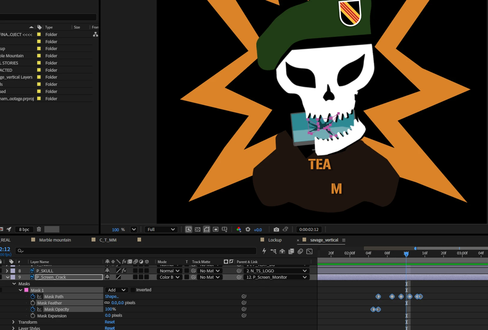
The sequence features a rigged character based on the Team Savage logo. Starting from a layered Adobe Photoshop file, I separated elements into individual layers within After Effects. I then animated the logo to expand outward into a shellburst effect, with the monitor entering from the left and being crushed by the skull. I revealed the cracking effect by keyframing a mask path. Motion was refined using custom-timed keyframes, allowing elements to slightly overshoot and settle into place to simulate weight and realism.
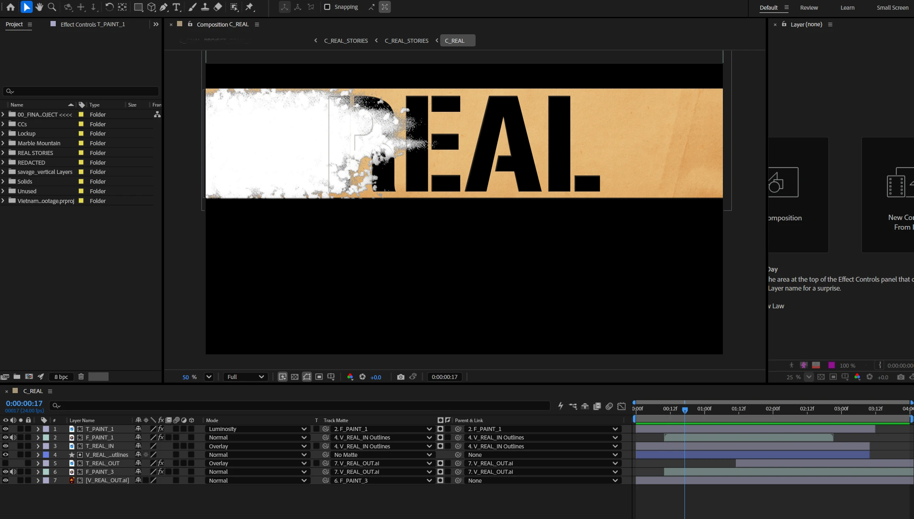
The “REAL STORIES” stencil sequence was the most technically complex portion, requiring multiple layers and precompositions to properly render textures and effects. To achieve an authentic look, I recorded spray paint strokes in Photoshop and integrated that footage into the composition.
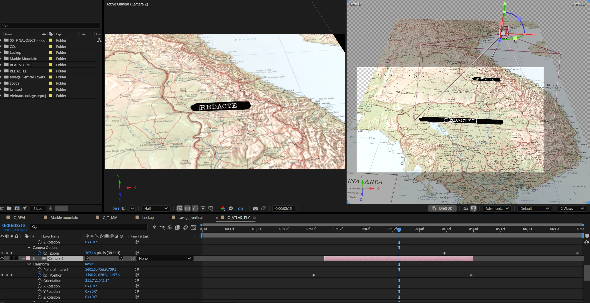
The 3D “REDACTED” map sequence reflects the classified nature of MACV-SOG operations. Personnel involved in these missions were restricted from discussing them for decades. I used a CIA Atlas map from the University of Texas Libraries and keyframed 3D camera movements to create depth and motion. I also recorded custom marker sound effects and synchronized them and public domain typewriter audio with the animations. I used a screencapture of photoshop brushes to create the marker animations, then used a Luma key to remove the white photoshop canvas.
The archival footage includes a range of sources, such as ranger patrols and equipment demonstrations. Two sequences stand out as authentic MACV-SOG footage: the Marble Mountain footage by Jim Shorten-Jones and the “string” extraction footage by Don Haase, featuring a SOG team being extracted on ropes hanging from a UH-1H helicopter.
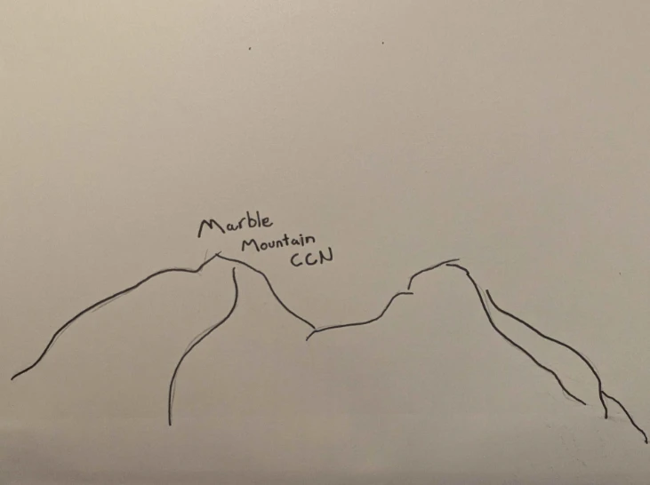
For the Marble Mountain segment, I created a hand-drawn illustration inspired by period news program visuals. I photographed the drawing, inverted the colors in After Effects, and applied a luma key to isolate the image. A looping turbulent displace randomized motion expression was added to replicate the subtle movement seen in period overlays.
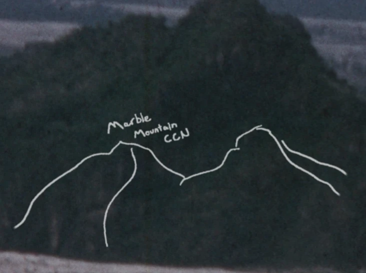
The soundtrack required custom editing to achieve the desired pacing. I spliced sections of “Fire in the Sky” from the S.O.G. Prairie Fire soundtrack by aligning cuts with audio transients, allowing for a natural flow while preserving the intended tone. The track, created by originalsas, has also been used in other productions by our team.
I was pleased with the final product! It may still see further modifications for future iterations.